السلسلة 38
السيارة (صنف B) · 40 سؤال. كل سؤال فيه الصورة والصوت. اختار الجواب (ولا جوج إلا كانو صحاح)، ورك على «تأكيد» باش تشوف واش صبتي.
- 40سؤال
- 32باش تنجح
- 1 – 4جواب واحد ولا أكثر
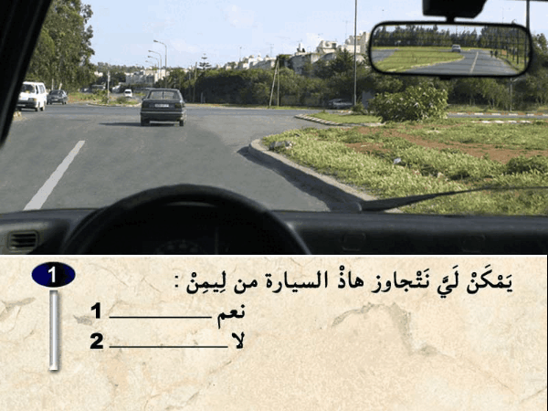
الكلافيي: 1–4 للجواب، Enter للتأكيد وللسؤال الجاي.
السلسلة 38 · النتيجة ديالك
0 / 40
السلسلة 38
السيارة (صنف B) · 40 سؤال، بالصوت، مع الجواب الصحيح والشرح.
السؤال 1
بيّن الجواب
الجواب الصحيح: 1
عملية التّجاوز تكون دائما من الجهة اليسرى، لكن يوجد حالة استثنائية واحدة يمكنني فيها من التّجاوز على اليمين، وهي عندما تكون عربة تستعد للانعطاف على اليسار مثل الصورة، مثل هذه الحالة يمكنني التّجاوز على اليمين.
السؤال 2
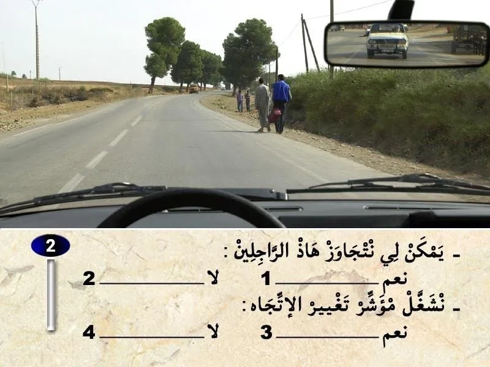
بيّن الجواب
الجواب الصحيح: 1 و 3
الطريق قدامي واضحة، والشاحنة اللي جاية فالجهة المعاكسة مازال بعيدة، وزيد على هاد الشي الراجلين كيمشيو خارج قارعة الطريق. نقدر نتجاوزهم بشرط نخلي بيني وبينهم مسافة جانبية ما تقلش على متر واحد، وهي أقل مسافة خاصني نحترمها فهاد الحالة. وبما أنني غادي ندير عملية التجاوز ونحيد شوية لليسار، خاصني نشعل مؤشر تغيير الاتجاه قبل ما نبدا المناورة. إذن الجواب الصحيح هو رقم 1 و 3.
السؤال 3
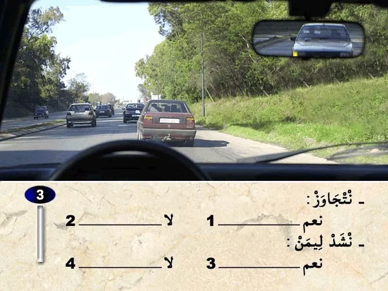
بيّن الجواب
الجواب الصحيح: 2 و 3
كما توضّح الصورة فيوجد عربة من الخلف تستعد للتّجاوز إذن لا يمكنني التّجاوز الان، ويجب عليّ التزام أقصى اليمين.
السؤال 4
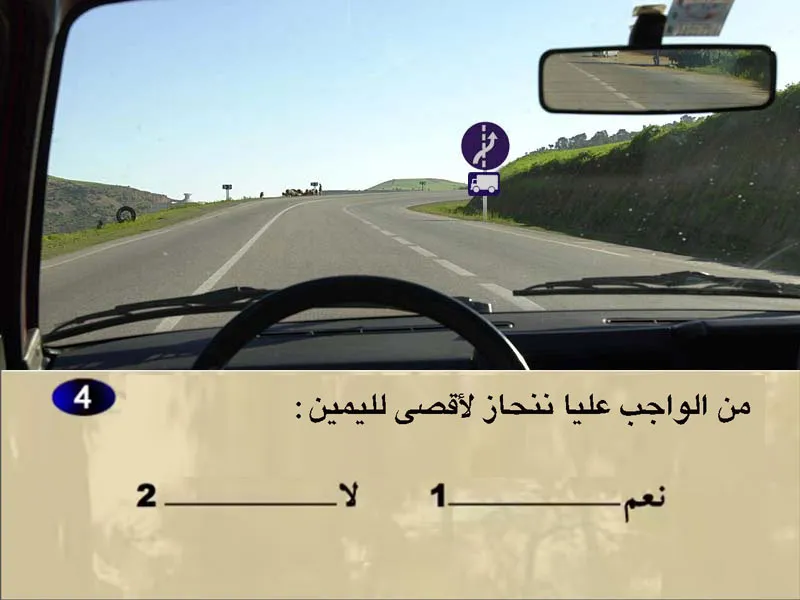
بيّن الجواب
الجواب الصحيح: 2
ليس من الواجب عليّ الانحياز إلى أقصى اليمين، لأنه كما توضح العلامة التّكميلية أسفل علامة الانحياز لليمين على أن هذا الانحياز لأقصى اليمين فهو خاص بالعربات ذات الوزن الثقيل أي الشاحنات، وهذا الانحياز لا يعنيني. إذن ليس من الواجب عليّ الانحياز لأقصى اليمين.
السؤال 5
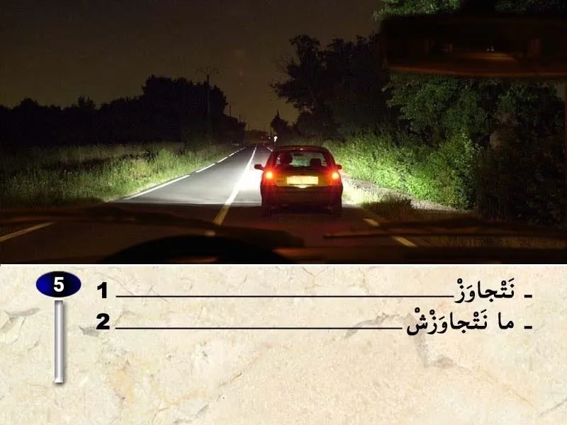
بيّن الجواب
الجواب الصحيح: 2
التّشوير الأفقي خط المتّصل، غذن بما بما أن الخط المتّصل فلا يمكنني التّجاوز.
السؤال 6
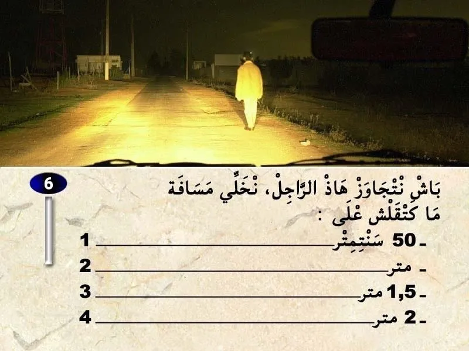
بيّن الجواب
الجواب الصحيح: 2
داخل التّجمع السّكني لكي أقوم بتجاوز راجل فيجب علينا ترك مسافة جانبية لا تقل عن متر واحد، وخارج التجمع السكني فأقوم بترك مسافة جانبية لا تقل عن متر ونصف، في هذه الحالة فيظهر في الصورة وجود منازل إذن نحن نتواجد داخل تجمع سكني، إذن بما أنني أتواجد داخل تجمع سكني فيحب عليّ ترك مسافة جانبية لا تقل عن متر واحد لكي أقوم بتجاوز هذا الرّاجل. الإجابة الصّحيحة هي رقم 2.
السؤال 7
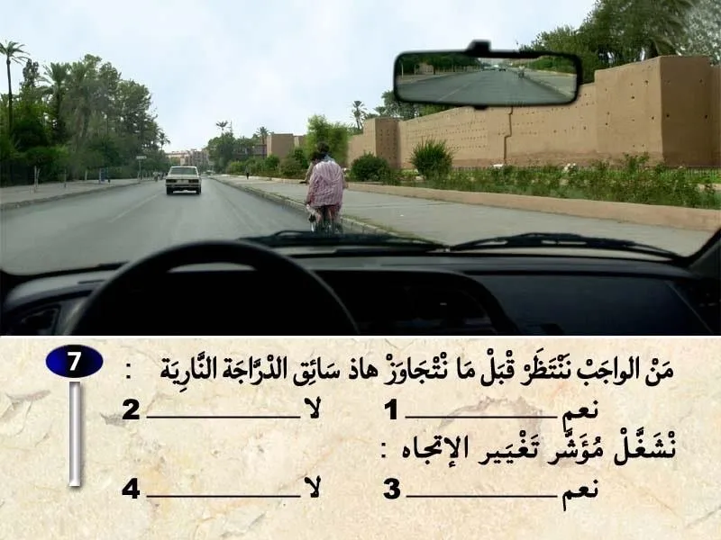
بيّن الجواب
الجواب الصحيح: 2 و 3
قبل ما نتجاوز سائق الدراجة، من الواجب نشوف مزيان فالطريق وفالمرايات، ونتأكد بلي ما كاينة حتى سيارة جاية من الاتجاه المعاكس، وما كاين حتى مستعمل طريق من ورايا بدا كيتجاوزني، إذن ماشي من الواجب انني ننتزر قبل مانتجاوز صاحب الدراجة النارية، نقدر نبدا التجاوز، مع ترك مسافة جانبية ما تقلش على متر واحد، وخاصني نشعل مؤشر تغيير الاتجاه حيث غادي نتحرك لليسار. إذن الجواب الصحيح هو رقم 2 و 3.
السؤال 8
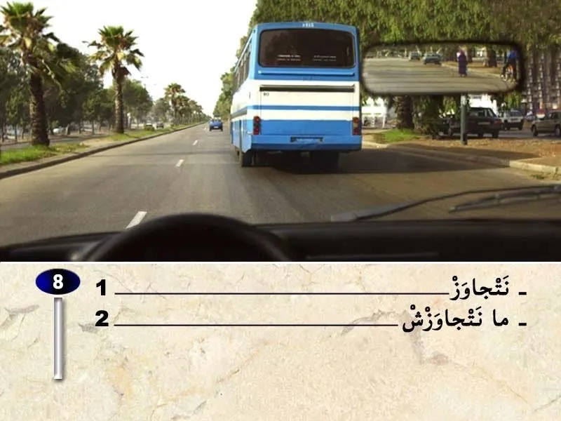
بيّن الجواب
الجواب الصحيح: 1
لديّ مسلكين للسّير بالنسبة لي، واحد للسّير العادي (الذي أتواجد فيه حاليا) والاخر خاص بالتّجاوز، بما أنه لا توجد عربة قادمة من الخلف تقوم بتجاوزي إذن في هذه الحالة يمكنني استعمال المسلك الذي على اليسار لكي أقوم بتجاوز هذه الحافلة.
السؤال 9
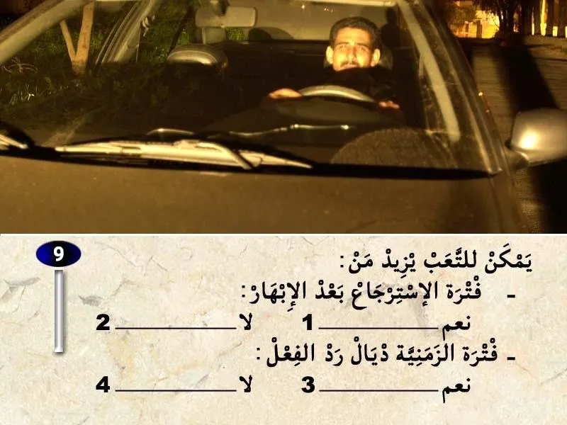
بيّن الجواب
الجواب الصحيح: 1 و 3
التّعب يمكن أن يزيد من فترة استرجاع بعد الإبهار، لكي نشرح أكثر بالنسبة لفترة استرجاع بعد الإبهار فهي أن الشخص مثلا عندما يكون متعب وسيارة في الاتجاه المقابل استعملت أضواء الطّريق فهذا السائق بما أنه متعب سوف ينبهر وسوف يستغرق وقت أطول لاستيعاب الوضعية التي هو فيها. بالنسبة للتّعب يمكن أن يزيد كذلك من وقت رد الفعل، فمثلا لو كنت متعب فسوف أستغرق وقت أطول لكي أقوم باتخاذ قرار أثناء السياقة أي وقت رد الفعل سوف يصبح أطول.
السؤال 10
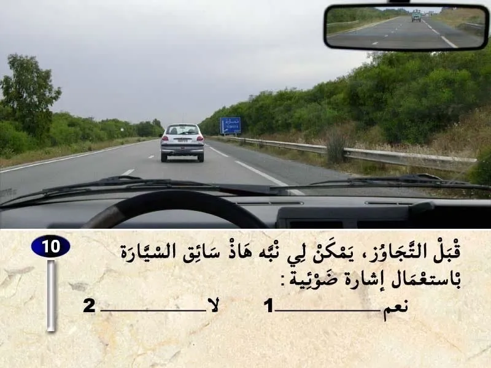
بيّن الجواب
الجواب الصحيح: 1
عندما نقوم بتجاوز عربة خارج التّجمع السّكني فيمكننا التّنبيه بواسطة إشارة ضوئية أو بواسطة المنبّه الصوتي، إذن في هذه الحالة وعندما أريد البدا بعملية التّجاوز فيمكنني استعمال الإشارة الضّوئية لكي أقوم بتنبيه هذه السيّارة التي أمامي.
السؤال 11
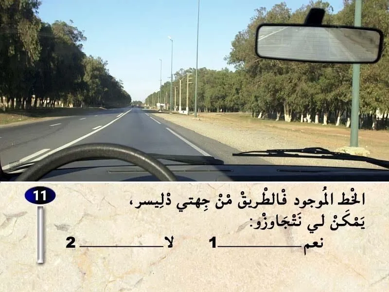
بيّن الجواب
الجواب الصحيح: 2
يوجد 2 خطوط على الجهة اليسرى، ودائما الخط الذي يعنيني في مثل هذه الحالات فهو أول خط، الخط الاول بالنسبة لي هو خط متّصل وبعد ذلك يوجد خط متقطّع، الخط المتّصل هو الأول يعني لا يمكنني أن أتخطاه. إذن في هذه الحالة الخط الموجود على جهتي اليسرى لا يمكنني تجاوزه.
السؤال 12
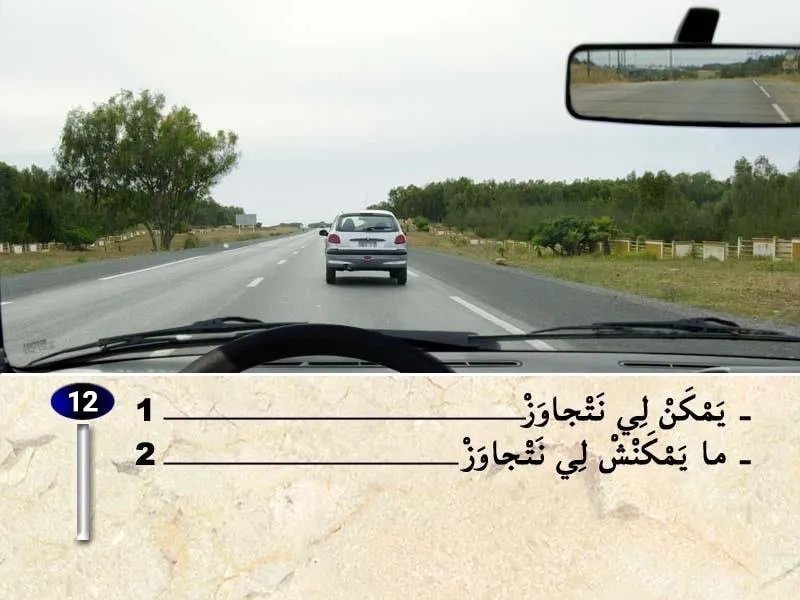
بيّن الجواب
الجواب الصحيح: 1
لا توجد عربة قادمة من الخلف تقوم بعملية التّجاوز وأيضا التّشوير الأفقي فهو خط متقطع يسمح لي بتجاوزه (لا يوجد شيئ يمنعني من التّجاوز)، إذن في هذه الحالة يمكنني التّجاوز.
السؤال 13
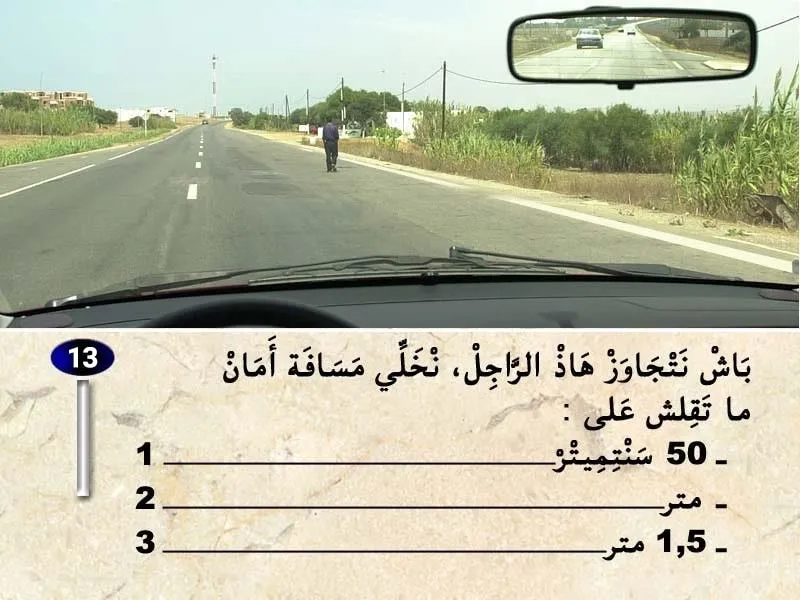
بيّن الجواب
الجواب الصحيح: 2
داخل التّجمع السّكني لكي أقوم بتجاوز راجل فيجب علينا ترك مسافة جانبية لا تقل عن متر واحد، وخارج التجمع السكني فأقوم بترك مسافة جانبية لا تقل عن متر ونصف، في هذه الحالة فيظهر في الصورة وجود منازل إذن نحن نتواجد داخل تجمع سكني، إذن بما أنني أتواجد داخل تجمع سكني فيحب عليّ ترك مسافة جانبية لا تقل عن متر واحد لكي أقوم بتجاوز هذا الرّاجل. الإجابة الصّحيحة هي رقم 2.
السؤال 14
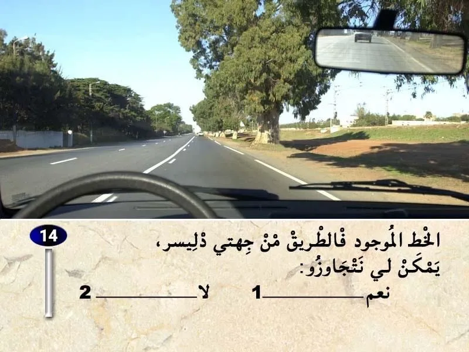
بيّن الجواب
الجواب الصحيح: 1
يوجد 2 خطوط على الجهة اليسرى، ودائما الخط الذي يعنيني في مثل هذه الحالات فهو أول خط، الخط الاول بالنسبة لي هو خط متقطّع وبعد ذلك يوجد خط متّصل، الخط المتقطّع هو الأول يعني يمكنني أن أتخطاه. إذن في هذه الحالة الخط الموجود على جهتي اليسرى يمكنني تجاوزه.
السؤال 15
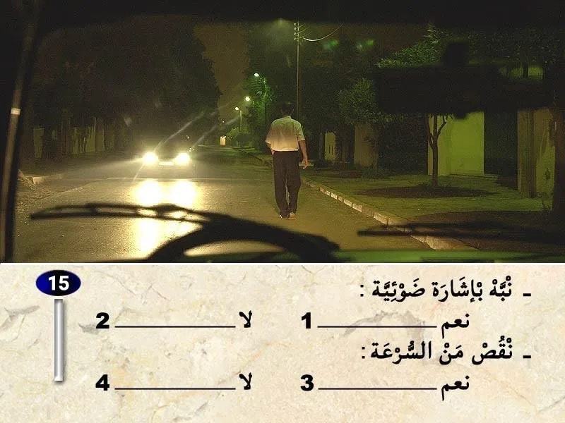
بيّن الجواب
الجواب الصحيح: 1 و 3
أقوم بالتّنبيه بإشارة ضوئية لكي أنبّه الراجل أنّني أسير خلفه (بما أن استعمال المنبّه الصوتي ممنوع استعماله على الرّاجلين) وأيضا لكي تقوم السّيارة التي توجد في الاتجاه المعاكس بتغيير الأضواء التي تسير بها من أضواء الطّريق إلى أضواء التّقابل، و دائما عند وجود خطر أمامي فأقوم بالإنقاص من السّرعة (الخطر هنا هو الرّاجل الذي يسير على الطّريق)، إذن في هذه الحالة أقوم بالتّنبيه بإشارة ضوئية وأقوم بالإنقاص من السّرعة.
السؤال 16
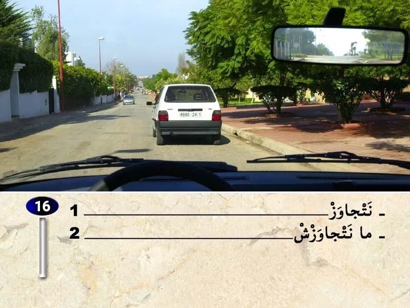
بيّن الجواب
الجواب الصحيح: 2
العربة التي أمامي فهي متوقّفة ويجب عليّ أن أقوم بتجاوزها لكي أكمل السّير، لكن لا يمكنني التّجاوز الان، توجد سيارة قادمة في الاتجاه المعاكس. يجب عليّ الانتظار لكي أقوم بالتّجاوز. إذن في هذه الحالة لا أتّجاوز.
السؤال 17
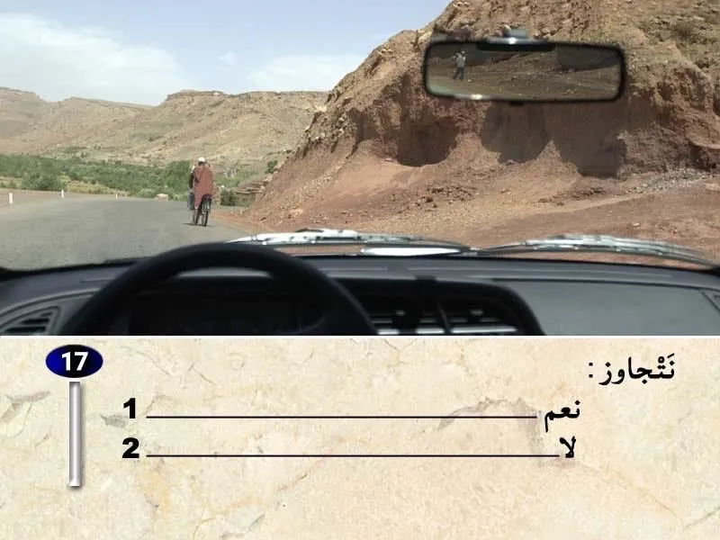
بيّن الجواب
الجواب الصحيح: 2
يوجد منعرج على اليمين والرؤية غير واضحة، لا يمكنني التّجاوز عندما أتواجد قرب منعرج. إذن في هذه الحالة لا أتجاوز.
السؤال 18
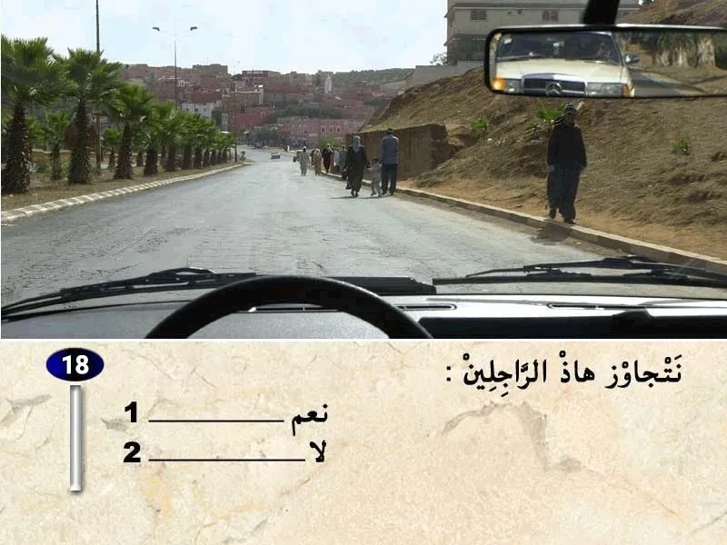
بيّن الجواب
الجواب الصحيح: 2
المرآة الدّاخلية للسيّارة توضّح أنه توجد سيّارة تستعد لتجاوزي. إذن في هذه الحالة لا يمكنني تجاوز هؤلاء الرّاجلين.
السؤال 19
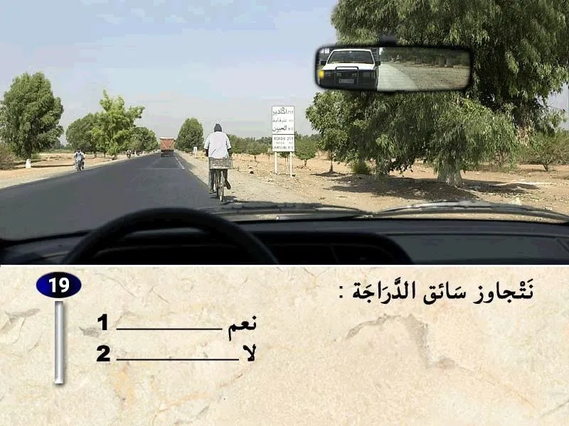
بيّن الجواب
الجواب الصحيح: 2
المرآة الدّاخلية للسيّارة توضّح أنه توجد سيّارة تستعد لتجاوزي. إذن في هذه الحالة لا يمكنني تجاوز سائق الدَّراجة.
السؤال 20
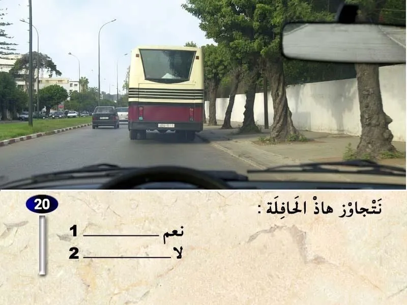
بيّن الجواب
الجواب الصحيح: 1
المرآة الدّاخلية للسيّارة توضّح أنه لا توجد عربة تستعد لتجاوزي. إذن في هذه الحالة بما أنه لا توجد عربة تستعد لتجاوزي والطّريق التي أتواجد فيها فهي ذات إتّجاه واحد إذن يمكنني تجاوز هذه الحافلة. (لا يوجد تشوير يوضّح أنها طريق ذات إتّجاه واحد، لكن لو لاحظت جيّدا في الصورة ففي الجهة الأخرى توجد سيارات قادمة من الاتجاه المعاكس وهذا يدل على أن هذه الطّريق ذات إتّجاه واحد).
السؤال 21
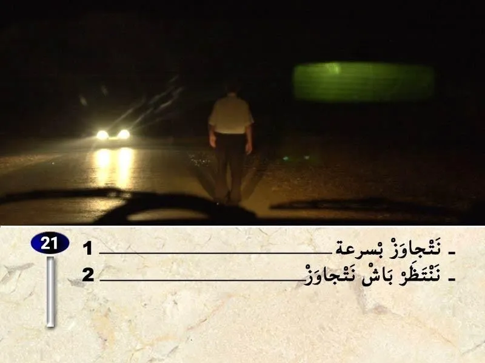
بيّن الجواب
الجواب الصحيح: 2
يوجد راجل على الطّريق ولكي أقوم بتجاوزه يجب عليّ انتظار مرور السيّارة التي توجد في الاتجاه المقابل. إذن في هذه الحالة أنتظر لكي أقوم بالتّجاوز.
السؤال 22
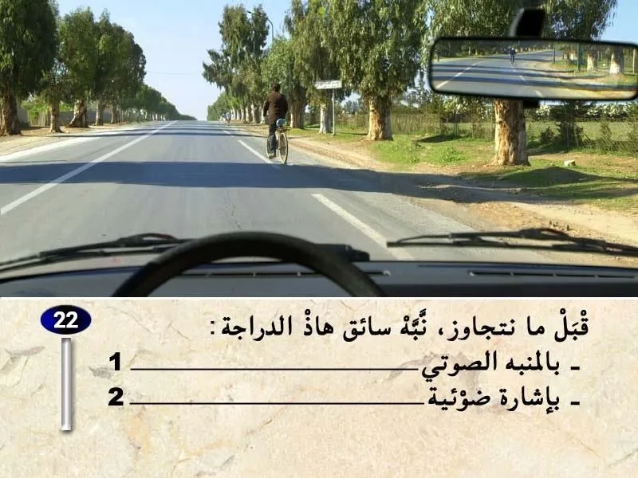
بيّن الجواب
الجواب الصحيح: 1
إستعمال الاشارة الضّوئية لن يكون لها تأثير ولن ينتبه لها سائق الدّراجة ولن يعرف أنني قمت بتنبيهه، غذن في هذه الحالة بما أنني أتواجد خارج التّجمع السكني والمنبّه الصوتي مسموح به إذن أقوم بالتّنبيه بالمنبّه الصّوتي قبل تجاوز صاحب الدرّاجة.
السؤال 23
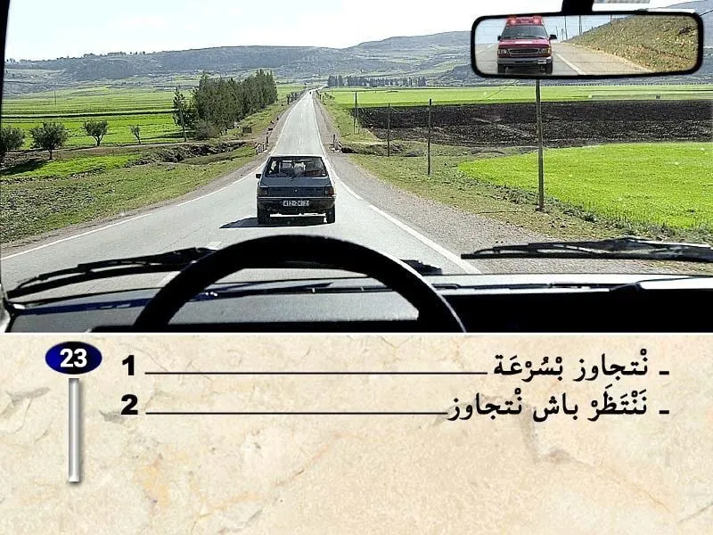
بيّن الجواب
الجواب الصحيح: 2
المرآة الدّاخلية للسيّارة توضّح أنه توجد سيّارة إسعاف من الخلف وهي في مهمّة استعجالية، وهذا واضح من خلال الأضواء الحمراء الموجودة فوقها،. إذن بما أن سيارة الإسعاف توجد في مهمّة استعجالية فإن الأسبقية لها في المرور أولا. إذن في هذه الحالة أقوم بالانتظار للتّجاوز.
السؤال 24
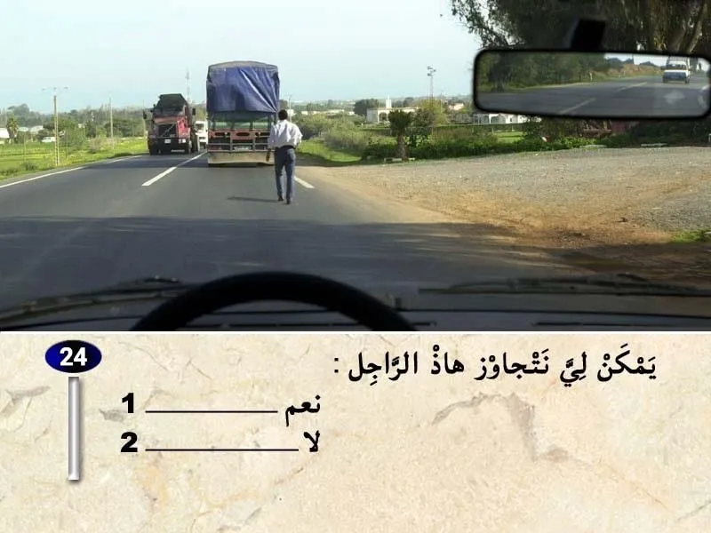
بيّن الجواب
الجواب الصحيح: 2
يوجد راجل يسير في وسط الطّريق ولكي أقوم بتجاوزه يجب أن تكون الظروف تسمح لي بالتّجاوز. الظّروف الان لا تسمح لي بالتّجاوز لأنه توجد عربات قادمة في الإتّجاه المعاكس. إذن لا يمكنني تجاوز هذا الرّاجل.
السؤال 25
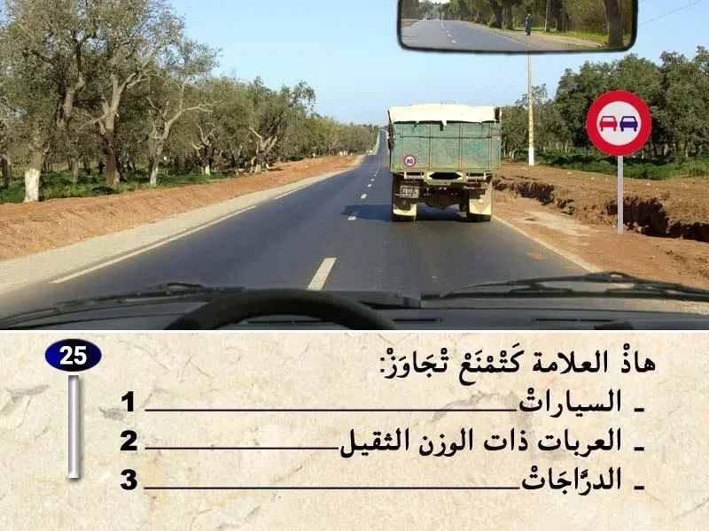
بيّن الجواب
الجواب الصحيح: 1 و 2
علامة المنع فهي تعني ممنوع تجاوز العربات ذات محرّك باستثناء الدراجات التي ليس بها مقعد جانبي، يعني العلامة الطّرقية تمنعني من تجاوز العربات التي لديها محرك و 4 عجلات والدّراجات التي لها مقعد جانبي، ولا تمنعني من تجاوز أنواع الدّراجات الأخرى. إذن في هذه الحالة العلامة تمنع تجاوز السيارات والعربات ذات الوزن الثقيل.
السؤال 26
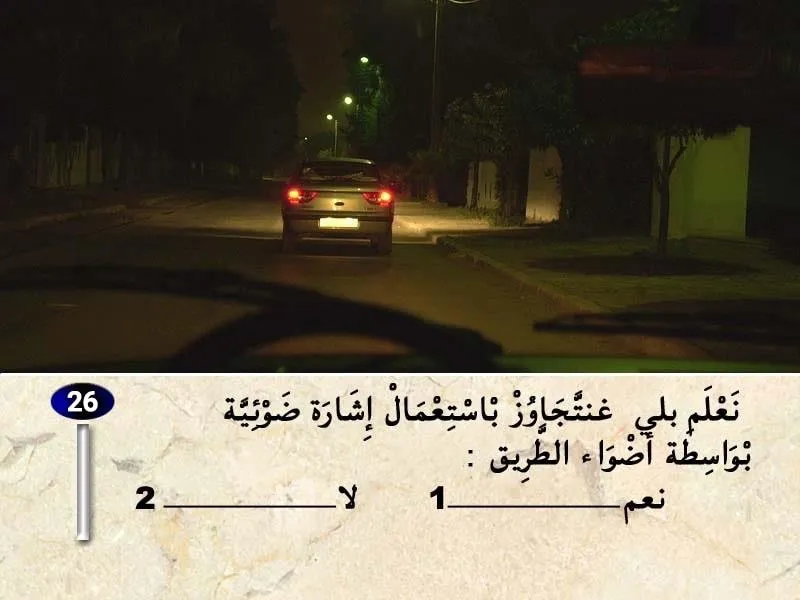
بيّن الجواب
الجواب الصحيح: 1
عندما أريد تنبيه عربة أمامي على أنّني سوف أقوم بعملية التّجاوز فأقوم بتنبيهها بإستعمال أضواء الطّريق.
السؤال 27
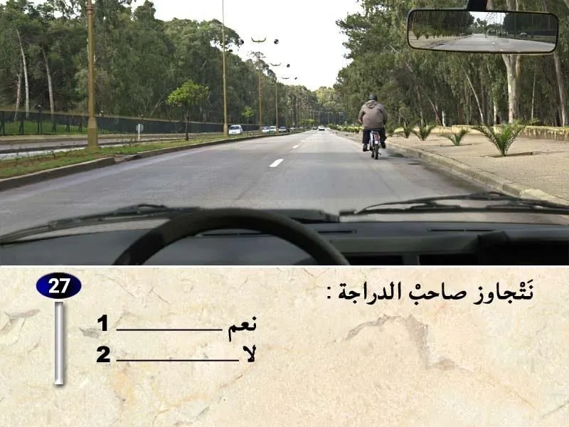
بيّن الجواب
الجواب الصحيح: 1
كما توضّح الصورة فالطّريق ذات إتّجاه واحد يعني يوجد مسلكين للسّير، المسلك الأول الذي أتواجد فيه الان وهو خاص بالسّير العادي والمسلك الثاني على اليسار فهو خاص بالتّجاوز، بما أنه لا توجد عربة تقوم بعملية التّجاوز من الخلف إذن يمكنني التّجاوز. إذن في هذه الحالة يمكنني تجاوز صاحب الدراجة.
السؤال 28
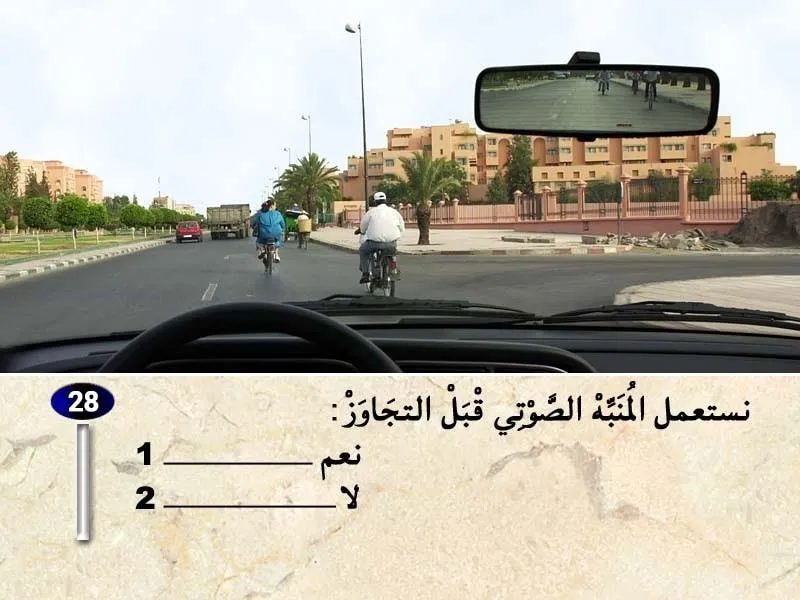
بيّن الجواب
الجواب الصحيح: 1
نحن نعلم أن استعمال المنبّه الصوتي ممنوع داخل التجمّع السّكني لكن صيغة السؤال والحالة فهي تشير إلى عملية التّجاوز، بمعنى أن السؤال ليس فقط هل أستعمل المنبّه الصوتي، لكن السؤال صيغته تقول هل أستعمل المنبّه الصوتي لكي أتجاوز، وهنا يقصد التّجاوز، ونحن نعلم أنه عندما نريد التّجاوز فيجب علينا التّنبيه بإشارة ضوئية أو بالمنبّه الصوتي، الإشارة الضوئية هنا ليست فعّالة ولن يراها سائقو الدّراجات خصوصا في النّهار لذلك سوف أقوم بإستعمال منبّه الصوتي قبل عملية التّجاوز. إذن في هذه الحالة أقوم بإستعمال المنبّه الصوتي قبل التّجاوز.
السؤال 29
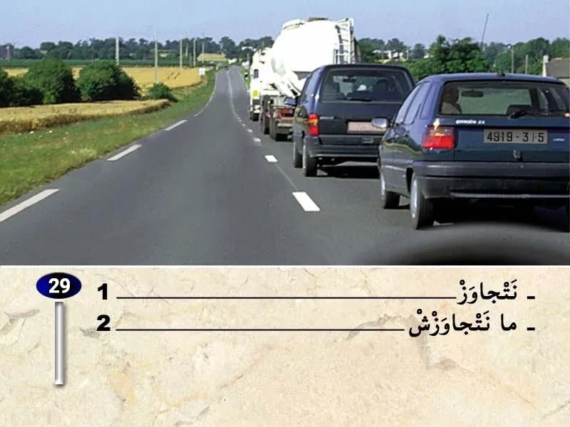
بيّن الجواب
الجواب الصحيح: 2
إذا كانت الطّريق ليست طريق ذات إتّجاه واحد (مثلا طّريق السيّار) فلا يمكنني أن أقوم بعملية التّجاوز لسلسلة من العربات. في هذه الطّريق كما هو واضح يمكن أن أجد عربات قادمة من الاتجاه المعاكس وإذا قمت بعملية التّجاوز ففي تلك اللحظة لن أستطيع السّير في المسلك الخاص بي لأنه توجد عربات أتجاوزها. لذلك في هذه الحالة لا أقوم بتّجاوز.
السؤال 30
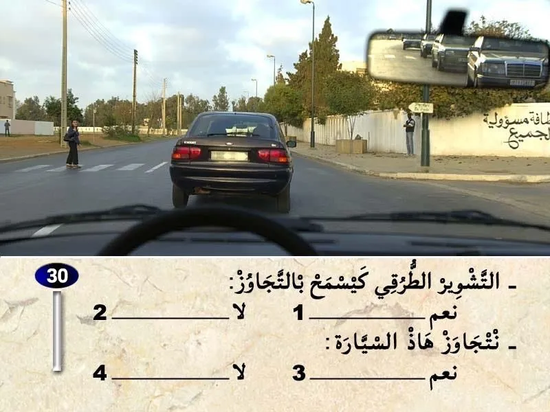
بيّن الجواب
الجواب الصحيح: 1 و 4
التّشوير الأفقي خط متقطّع فهو يسمح بعملية التّجاوز، لكن لن أقوم بتجاوز هذه السيّارة الان، أولا لأن السيّارة توقفت لإعطاء حق الأسبقية للرّاجل الذي يقوم بقطع الطّريق ويسير فوق ممر الرّاجلين وثانيا لو قمت بالتّجاوز فسوف أرتكب مخالفة لأنه سوف يكون خطر الاصطدام بالراجل ولم أقم بإعطائه حق الأسبقية في المرور. إذن في هذه الحالة التّشوير الأفقي الخط المتقطّع يسمح بالتّجاوز لكن لا يمكنني تجاوز السيّارة الان.
السؤال 31
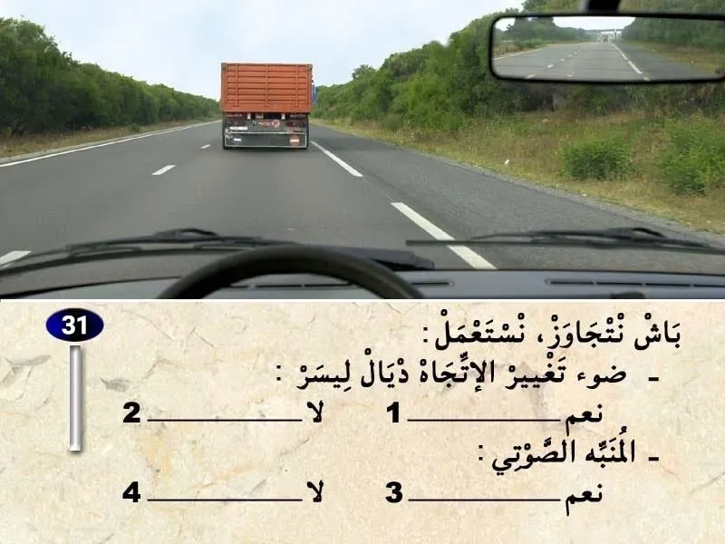
بيّن الجواب
الجواب الصحيح: 1 و 3
الطّريق ذات إتّجاه واحد وهذا واضح من خلال الخط المتّصل أقصى اليسار، وهذا يعني أنه لن توجد عربات قادمة في الاتجاه المعاكس. إذن لكي أقوم بالتّجاوز على اليسار فدائما أقوم بإستعمال مؤشر تغيير الاتجاه لليسار، بما أنه نتواجد خارج التّجمع السّكني ونتواجد في النّهار فيمكنني استعمال منبّه الصوتي للتّنبيه قبل التّجاوز. إذن في هذه الحالة لكي أقوم بالتّجاوز فأقوم بإستعمال مؤشر تغيير الاتجاه لليسار وأقوم بالتّنبيه بالمنبّه الصّوتي.
السؤال 32
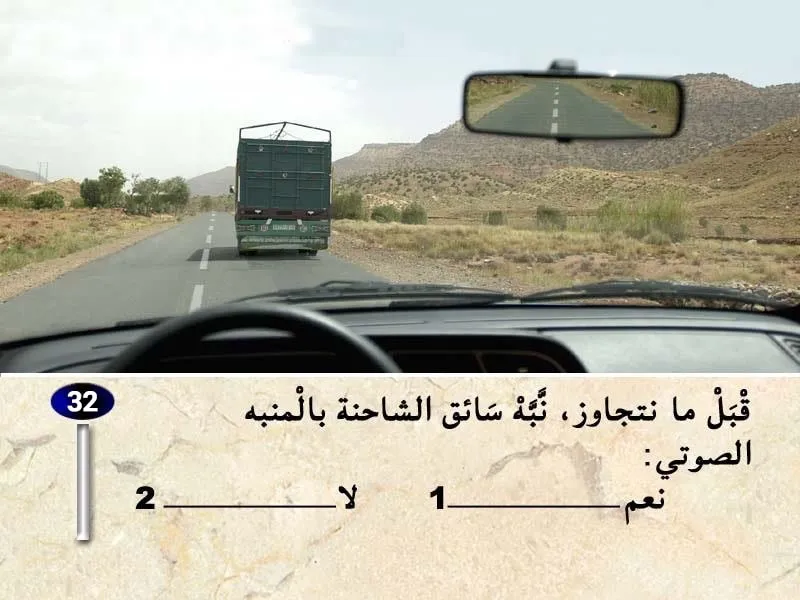
بيّن الجواب
الجواب الصحيح: 1
دائما قبل التّجاوز أقوم بتنبيه العربة التي أمامي بالمنبّه الصوتي أو بإشارة ضوئية (على حسب الحالة)، في هذه الحالة نتواجد في النّهار وخارج التّجمع السّكني إذن المنبّه الصوتي مسموح به لكي أقوم بتنبيه سائق الشاحنة قبل التّجاوز.
السؤال 33
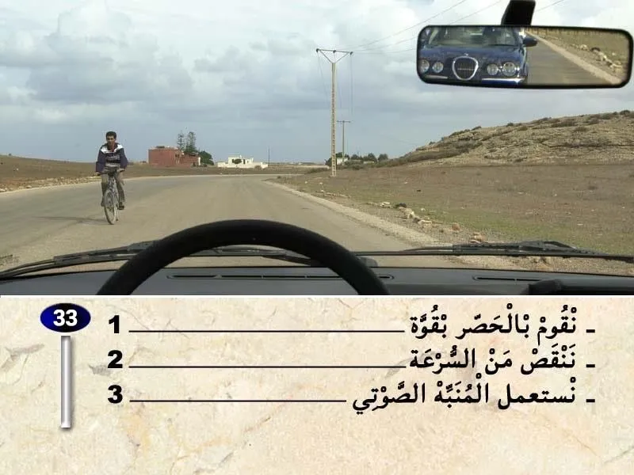
بيّن الجواب
الجواب الصحيح: 2
يوجد عربات من الخلف ويوجد خطر أن تصطدم بي في حالة إذا قمت بالحصر بقوّة، لذلك لا أقوم بالحصر بقوة. استعمال المنبّه الصوتي فهو منوع داخل التجمّع السكني (كما توضّح الصورة يوجد منازل وهذا يعني على أننا داخل تجمّع سكني) إضافة على أنه استعمال منبّه الصوتي على الدّراجات فهو ممنوع. وفي حالات الخطر أقوم بالإنقاص من السّرعة، وهنا يوجد خطر سائق الدراجة يسير في وسط الطّريق. إذن في هذه الحالة أقوم بالإنقاص من السّرعة.
السؤال 34
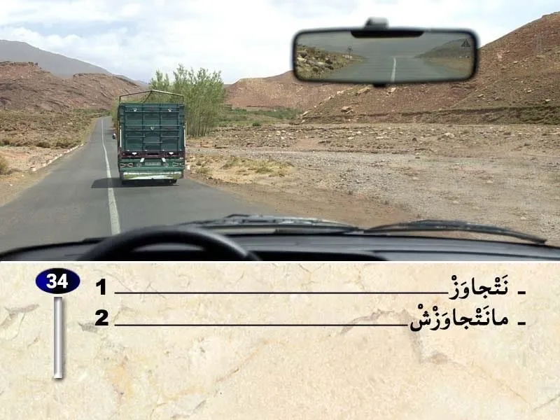
بيّن الجواب
الجواب الصحيح: 2
التّّشوير الأفقي الخط المتّصل يمنعني من التّجاوز. إذن في هذه الحالة لا أقوم بالتّجاوز.
السؤال 35
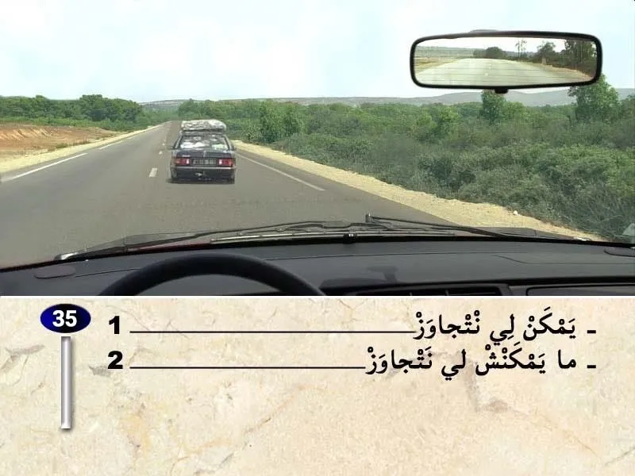
بيّن الجواب
الجواب الصحيح: 1
لا توجد عربة تستعد لتجاوزي من الخلف، ولا توجد عربة قادمة من الإتّجاه المعاكس، كما أن التّشوير الأفقي الخط المتقطّع فهو يسمح لي بالتّجاوز. إذن في هذه الحالة يمكن لي التّجاوز.
السؤال 36
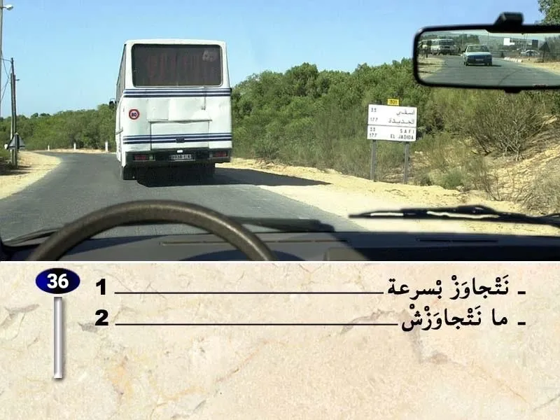
بيّن الجواب
الجواب الصحيح: 2
نتواجد قرب منعرج والطّريق ذات اتّجاهين يعني توجد عربات قادمة من الاتجاه المعاكس (لكي أعرف هل الطّريق ذات إتّجاه واحد أو اتّجاهين فأقوم بالتحقق أقصى اليسار هل يوجد خط متّصل أم لا، في هذه الصورة كما نلاحظ في أقصى اليسار لا يوجد أصلا خط وهذا يعني أن الطّريق ذات اتّجاهين)، إذن بما أنه يوجد خطر وجود عربات قادمة من الاتجاه المعاكس وكذلك نتواجد قرب منعرج إذن لا أقوم بالتّجاوز. (لو كانت الطّريق ذات إتّجاه واحد فيمكنني التّجاوز رغم وجود منعرج لأنه في تلك الحالة لن تتواجد عربات قادمة من الاتّجاه المعاكس).
السؤال 37
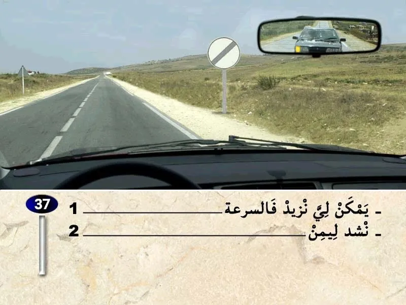
بيّن الجواب
الجواب الصحيح: 2
توجد سيارة تستعد لتجاوزي من الخلف، عندما تستعد سيارة لتجاوزي فلا أقوم بالزيادة في السّرعة ولا أقوم بالإنقاص من السّرعة، أحتفظ بالسرعة التي أسير بها وألتزم اليمين. إذن في هذه الحالة ألتزم اليمين.
السؤال 38
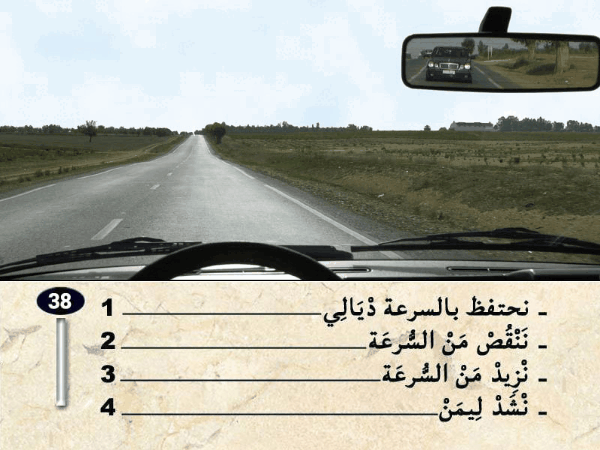
بيّن الجواب
الجواب الصحيح: 1 و 4
توجد سيارة تستعد لتجاوزي من الخلف، عندما تستعد سيارة لتجاوزي فلا أقوم بالزيادة في السّرعة ولا أقوم بالإنقاص من السّرعة، أحتفظ بالسرعة التي أسير بها وألتزم اليمين. إذن في هذه الحالة أحتفظ بالسّرعة التي أسير بها و ألتزم اليمين.
السؤال 39
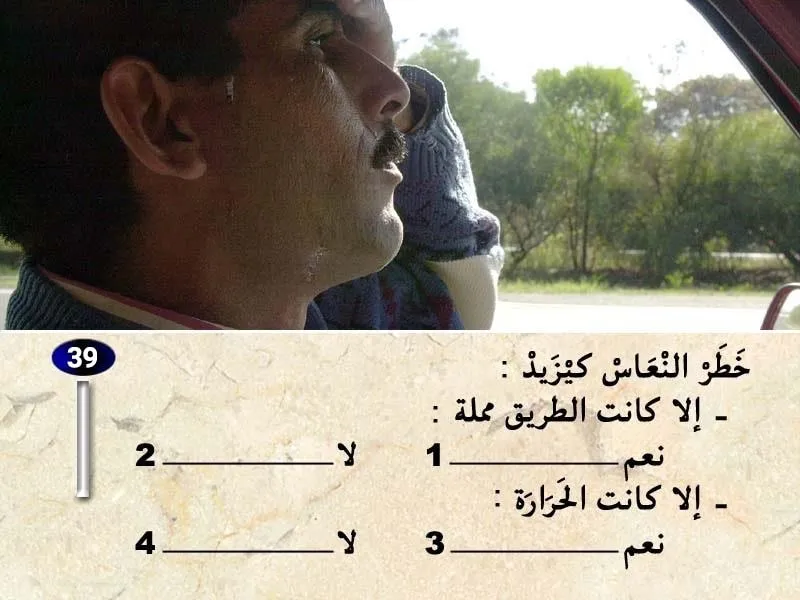
بيّن الجواب
الجواب الصحيح: 1 و 3
عندما تكون الطّريق طويلة بدون منعرجات وبدون عربات كثيرة فيوجد الملل الذي يؤدي إلى خطر النّوم، على عكس الطريق عندما تكون فيها عربات وتكون فيها منعرجات فدائما السائق يكون حذر ولا يشعر بالملل الذي يؤدي إلى النّوم. بالنسبة للحرارة فهي تؤدي أيضا بخطر النّوم، لأن الحرارة تشعر السائق بالارتخاء وبالتالي خطر النّوم.
السؤال 40
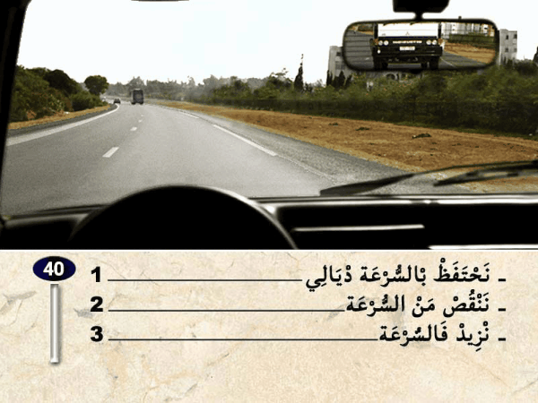
بيّن الجواب
الجواب الصحيح: 1
توجد شاحنة تستعد لتجاوزي من الخلف، عندما تستعد عربة لتجاوزي فلا أقوم بالزيادة في السّرعة ولا أقوم بالإنقاص من السّرعة، أحتفظ بالسرعة التي أسير بها وألتزم اليمين. إذن في هذه الحالة أحتفظ بالسّرعة التي أسير بها.